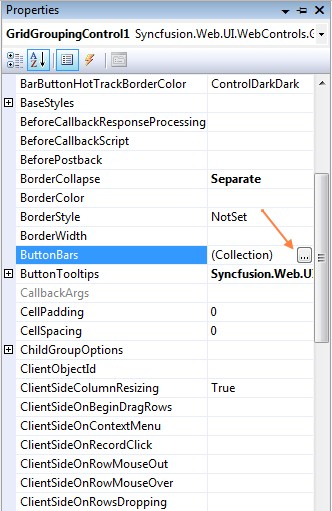
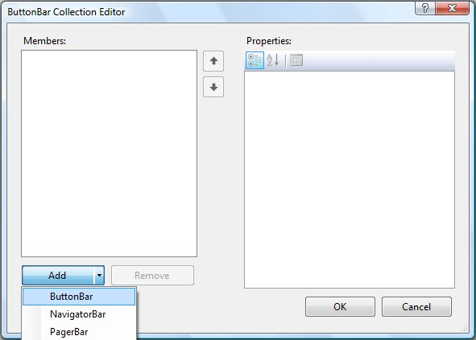
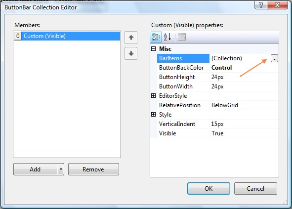
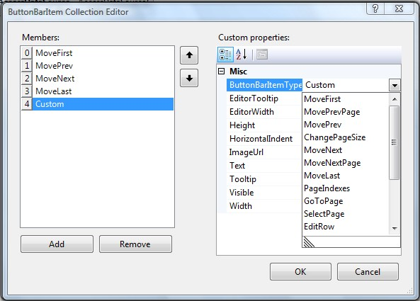
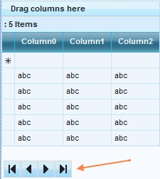
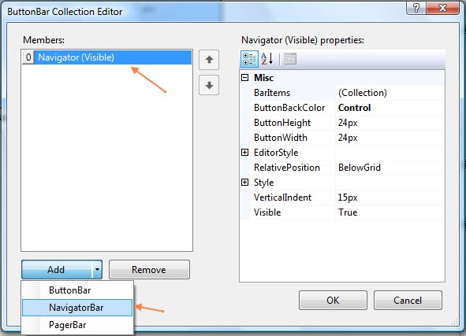
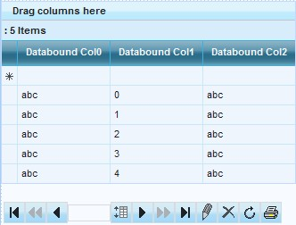

Adding ButtonBars
A ButtonBar can be added by clicking on the ButtonBars property of the GridGroupingControl and launching the ButtonBar Collection Editor.

Figure 89
ButtonBar Collection Editor
ButtonBars can be displayed either at the top or the bottom of the Grid via the RelativePosition property setting.
There are 3 types of ButtonBars.
· NavigatorBar
· PagerBar
· Custom

Figure 90
Users can also add a custom ButtonBar, to which they can add custom buttons as per their requirement.
Adding Buttons to ButtonBars
Buttons (BarItems) can be added to the ButtonBar by clicking on the BarItems property to launch the ButtonBarItem Collection Editor and clicking on the 'Add' button. The ButtonBarItemType property determines the type of the button added. It can be set either to one of the existing types or can be set to Custom. The various properties of the Buttons like Tooltip, Text and so on can be set in the ButtonBarItem Collection Editor as shown below.

Figure 91

Figure 92: Setting properties for a Button via the ButtonBarItem Collection Editor
 Note: Programming behavior of
custom buttons is demonstrated in the SelectionModes sample.
Note: Programming behavior of
custom buttons is demonstrated in the SelectionModes sample.
Customized ButtonBars can also be added to the GridGroupingControl, using the ButtonBars Collection. These ButtonBars include options for adding custom buttons, in addition to those buttons in navigator and pager bars. Custom Buttons can also be included in navigator and pager bars.

Figure 93: Grid with ButtonBar
Navigator Bar
The Navigator Bar includes buttons that enable traversing between different pages and rows of the grid. It also includes options for editing grid rows and refreshing the grid. The buttons are hot-tracked on hovering the mouse cursor. The buttons included in this Navigator Bar are given below.
· First row
· Previous page
· Previous row
· Change page size
· Next row
· Next page
· Last row
· Edit row
· Delete row
· Refresh
Adding a NavigatorBar

Figure 94

Figure 95